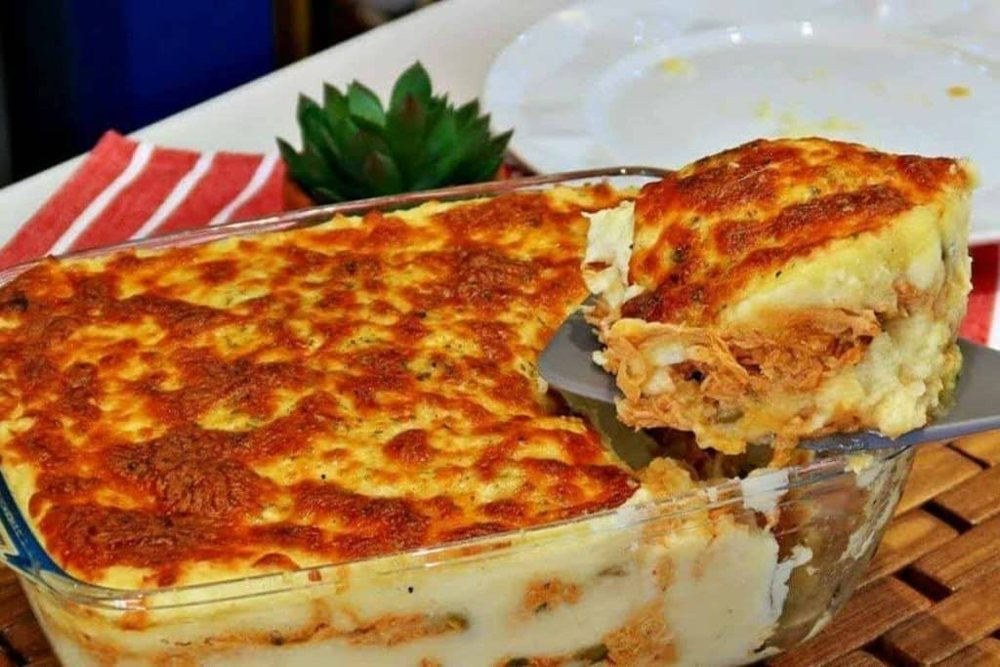

Aves · Frango
Escondidinho de frango com batata

Ingredientes
- 500 g de batata inglesa
- 400 g de frango desfiado
- 100 ml de leite
- 60 g de requeijão light
- 80 g de muçarela
- Cebola, alho e temperos
Modo de preparo
- Cozinhe as batatas e amasse com leite e sal.
- Refogue o frango com alho, cebola e temperos.
- Misture o requeijão ao frango.
- Monte em quatro potinhos: purê, frango e uma camada fina de queijo.
- Gratine a 200 °C até dourar, deixe esfriar rapidamente e congele.
Observação
No dia: micro-ondas até ficar completamente quente, ou forno após descongelar na geladeira.